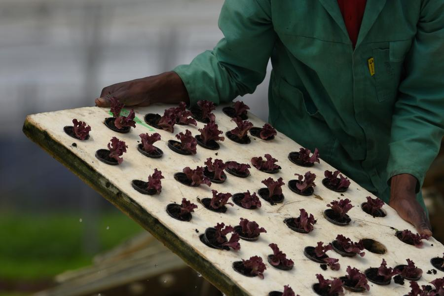
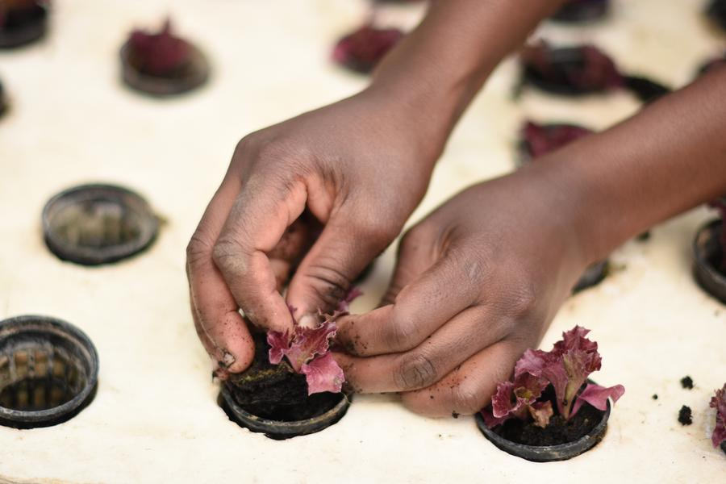
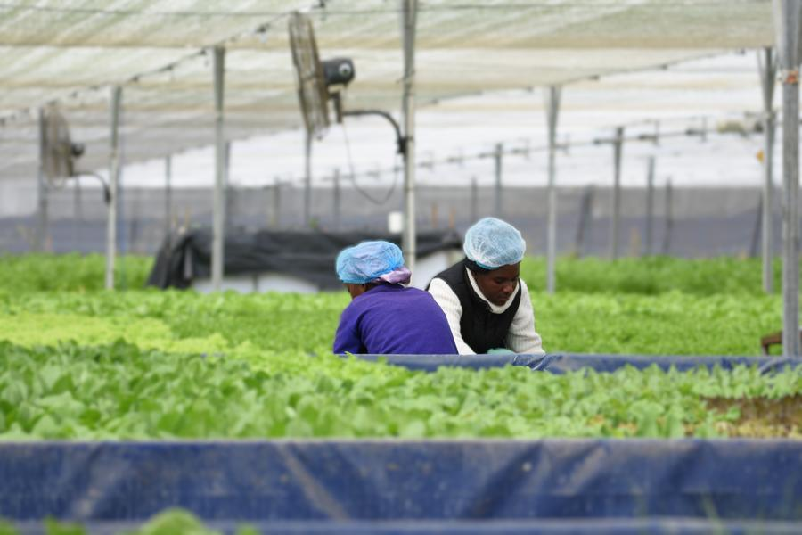

Proven in Namibia. Built to repeat.
Oribi builds and operates food production and processing in Namibia that replaces imports. Our first farm, outside Okahandja, is one of the largest commercial aquaponics facilities in Africa.
Namibia can grow more of what it eats.
A bag of salad leaves used to travel about 1,600 km from Johannesburg to reach a Windhoek shelf. Every kilometre added cost and took days off its shelf life.
We grow it 70 km from Windhoek instead. The product is fresher, the chain is shorter and the price has come down. We estimate fancy lettuce in Namibia now costs 30 to 50% less than before we entered the market in late 2023.
That is the model: produce and process locally what the country currently imports, at a scale that changes the price.
Read the investment caseDistances as given by Oribi in trade press, November 2025.

One site. Seed to shelf.
Our Okahandja farm brings a hatchery, a seedling house, a 5,000 m² aquaponic greenhouse, a 4,500 m² herb net house and a high-care packhouse onto a single site.
It runs on its own off-grid solar system and is managed on data, batch by batch. Nothing waits on a supplier or a truck.
Explore the farmFish, nutrients, plants, pack, shelf.
Fish provide the nutrient base. We measure the water, add precisely what each crop stage needs, and recirculate it. The plants clean the water for the fish.
Fish
Our tilapia provide the nutrient base.
Water
We test it, add precisely what each crop stage needs, and recirculate it.
Plants
Lettuce, herbs and greens grow on floating rafts and clean the water for the fish.
Pack
Leaves are washed, dried and packed on the farm in a high-care facility.
Shelf
Kept cold all the way to the store.
The proof, in five lines.
- 01
It works
A commercial agri-tech operation that reached scale and supplies retailers every week of the year. Phase 1B, which doubled the aquaponic growing area, completed in 2026.
- 02
It replaces imports
Washed, packed lettuce that once came from South Africa is now grown in Namibia, at higher quality and at a price we estimate to be 30 to 50% lower.
- 03
It is integrated
Hatchery, seedlings, growing, soil herbs and packing on one site, with six independent growing systems.
- 04
It is run on data
Every batch is tracked from seed to pack. More than 1,100 batch records and 470 days of packhouse temperature logs since April 2025.
- 05
It is certified
Local GAP certified under Primary Farm Assurance, and a registered producer with the Namibian Agronomic Board. 35 people work on the farm, 22 in permanent jobs.



Namibia first. Southern Africa next.
Oribi is a collective of investors and operators building Namibia's capacity to grow and process its own food. Further projects are in development. If you are an investor, an operator or an off-taker who sees the same gap, talk to us.